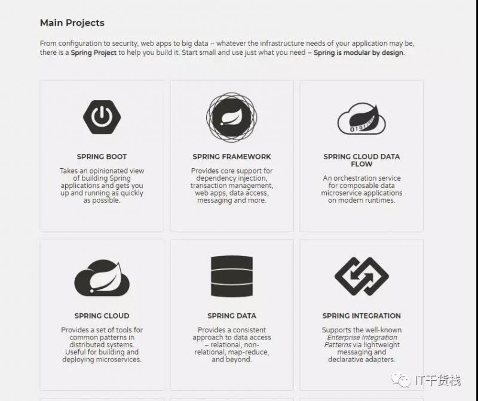
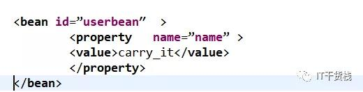
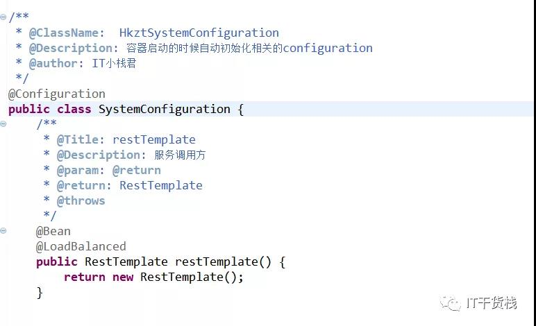
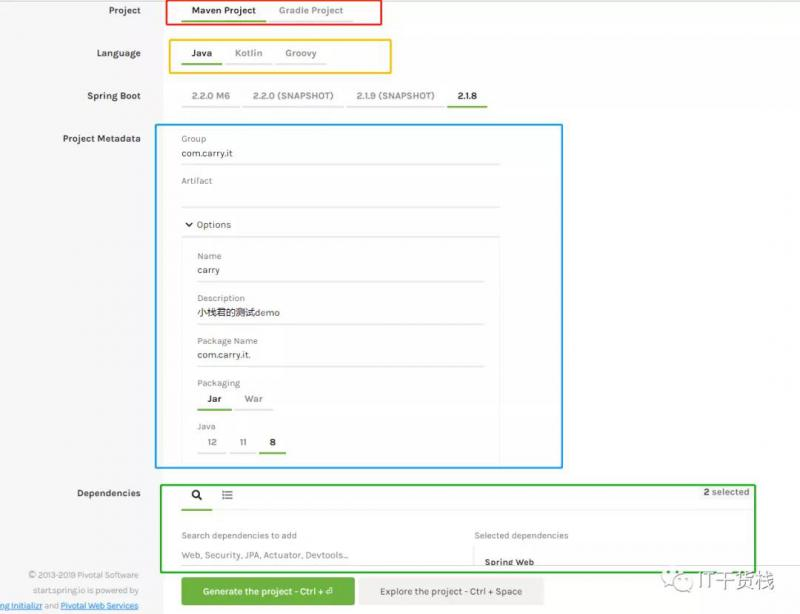
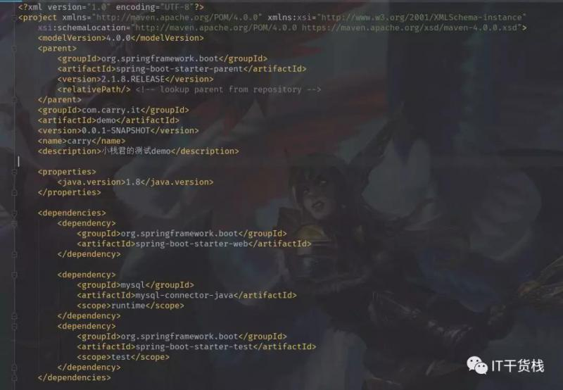
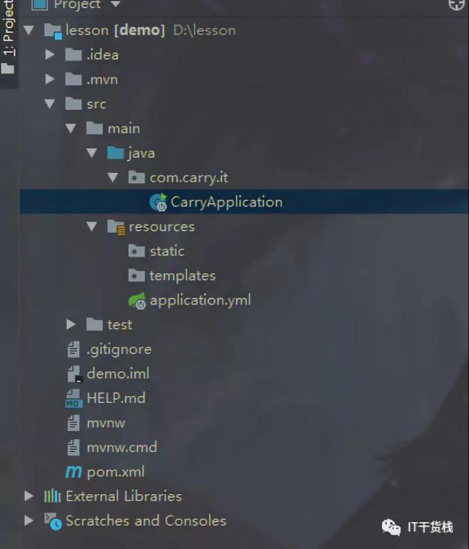
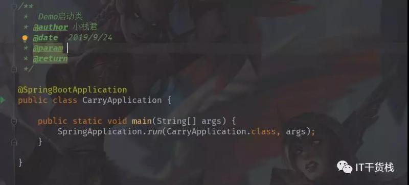

Hello，各位小伙伴大家好，我是小栈君。
今天的分享主题是关于Springboot主题分享，其实在写这个系列主题之前有想过一些关于分享技术的顺序问题，因为我在创建“IT干货栈”这个公众号之初就是想要分享关于后端技术的一些干货。
想要各位感兴趣的小伙伴都能够学习到或是能够温故知新一些技术或者技能点，后端技术并不限于java还涉足于go、Python、区块链、人工智能和大数据等方面。
所以想将这些学习到的东西做成笔记分享给各位，避免实战中的踩坑，共同进步。
正是因为涉及的技术较多，反而在系列主题分享的时候会产生一丝顾虑，思前想后还是决定各个语言的教程系统的穿插发布。
如果小伙伴有比较好的建议或者意见欢迎给小栈君进行留言。搜索“IT干货栈”，每天都有有趣且实用的干货等你，我们共同进步，一起成长！
1、Springboot前传
闲话不多说，我们这段时间围绕着Springcloud微服务框架的基石Springboot进行系列讲解。
后期会对SpringCloud微服务的技术进行从零到一的完整讲解和实战。让大家对关于java后端技术有更加深入和具体的理解，循序渐进的掌握好技术。
java开发者之于Spring好比是骑士之于矛，战士之于剑。在java开发者必掌握的框架排行前三的就是Spring家族系列。
因为其中包含的IOC和AOP两大利器大大简化了软件开发的程度复杂性，并以其优良的设计模式在众多的开源框架中夺得头筹，属于名副其实的老大哥。
那么作为Spring家族的一重要成员，在目前以java语言开发的软件的不完全统计中以Springboot作为框架的已经涵盖了90%以上。
所以Spring的官网上也将Springboot放在了C位。

(图片来源于Spring官网)
算下来Spring已经经历了4个时代的变迁，Spring1.0时代主要是针对于通过XML的方式配置实体Bean。如图所示：

随着JDK的发展，Spring2.X进入了一个新的时代，可以通过注解对于Bean进行声明和注入，大大减少了XML的配置文件的体量，加速了软件开发的速度。
但是针对于资源文件和数据库的配置文件当然是十分推荐写在XML中的。从Spring3.x开始提供了Java配置方式，使用Java配置方式可以更好的理解你配置的Bean。
现在我们就处于这个时代，并且Spring4.x和Spring boot都推荐使用java配置的方式。

如果所示，在这个类上我们使用了三个注解，第一个@Configuration 作用在类上，相当于一个XML的配置文件。
这个标志的含义就是在容器启动的时候会自动加载这个类，@Bean 作用于方法上，其类比作用就和在XML中配置的Bean一样。
当然还有一个@LoadBalanced 注解方法属于在Springcloud中的负载均衡，这个在后面一个专题会详细进行讲解。
其实随着互联网的发展和公司产品的迭代，大家可以发现在技术选型上我们也是经历了从struts 到 SpringMVC 然后到Springboot 和Springcloud这一变迁，其实万变不离其宗。
Spring内核机制和设计模式依旧是我们需要研究和学习的。毕竟Spring全家桶已经占据了大半江山。
2、Springboot初探

官方解释springboot 是可以简单轻松的创建单体以及企业级应用项目，你可以“直接运行”这些运用程序。
并且我们也对Spring平台和第三方库有自己的简介，你可以轻松入门，许多Springboot项目只需要非常少的配置。综上所述Springboot就是采用了“习惯优于配置”，化繁为简。
3、构建项目
既然官方所讲的构建一个项目需要极少的配置，那么我们就进行实战一下是否真的如官方所言呢？
为了方便测试，首先我们在Spring官网上进行创建我们的项目框架
官方网站 ：https://start.spring.io/
其实大家都可以都可以看到Spring官网可以很轻松的创建你想要的项目，并且在语言类型上支持了Maven和gradle ，语言的类型上也同样支持java、kotlin、Groovy。
版本方面有2.20、2.19、2.18 三个版本可供选择。并且对于第三方插件支持也是像官网上所讲的一样简单上手。
将预先设定好的项目下载下来可以用eclipse或idea工具打开即可看到我们项目的结构目录和相关的引用

从pom文件可以看出 Springboot的项目结构相对于我们传统的jar包引用和以前用pom文件的构建是简化了不少，并且在项目结构中已经生成了相关的启动类。

直接使用run方法就可以启动项目。是不是很简单呢，大家也可以试试哦

今天的分享就到这里就结束啦，如果你喜欢我的分享，麻烦你点击再看，分享或留言，我是小栈君，我们下期见，拜了个拜~
本文由博客一文多发平台 OpenWrite 发布！